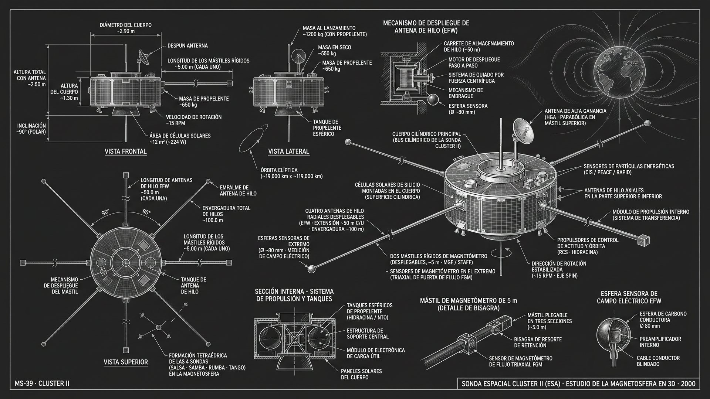

Cluster II

Cuatro naves idénticas volando en formación para medir en tres dimensiones el escudo magnético de la Tierra. Iban a durar dos años y aguantaron veinticuatro; al final se desintegraron a propósito sobre el Pacífico.
Reentradas dirigidas sobre el Pacífico Sur: Salsa el 8 de septiembre de 2024, Rumba en 2025, Samba el 31 de agosto de 2026 y Tango el 1 de septiembre de 2026, cuya señal se perdió quince minutos antes de entrar en la atmósfera. Personas: Philippe Escoubet, Bruno Sousa, Rolf Densing, Carole Mundell
Lo que hizo
- Cuatro que se perdieron — Las cuatro naves originales se destruyeron el 4 de junio de 1996, en el vuelo inaugural del Ariane 5. La misión se rehízo entera y volvió a lanzarse en el año 2000.
- El escudo en 3D — Fue la primera misión que estudió, modeló y cartografió en tres dimensiones la magnetosfera terrestre. Descubrió que el plasma frío domina su volumen hasta el 70% del tiempo.
- Cómo terminamos — Salsa reentró el 8 de septiembre de 2024, Samba el 31 de agosto de 2026 y Tango el 1 de septiembre de 2026. Fueron 26 años de ciencia que acabaron dando datos de reentrada.
Modelo 3D, chat y cómic, en tres idiomas
Fuentes
- science.nasa.gov/mission/cluster/
- esoc.esa.int/index.php/content/cluster-ii
- esa.int/articles/about-us/directorates/science/cluster/after-26-years-in-space-the-cluster-operations-team-says-a-last-goodbye
Ver el índice completo · Proyecto del NASA Space Apps Challenge 2026. Contenido con fuentes citadas.